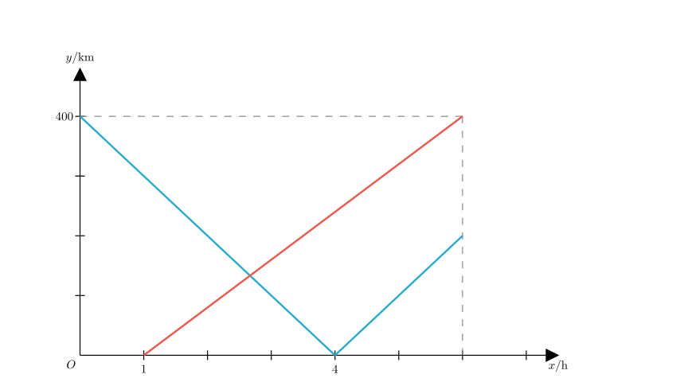
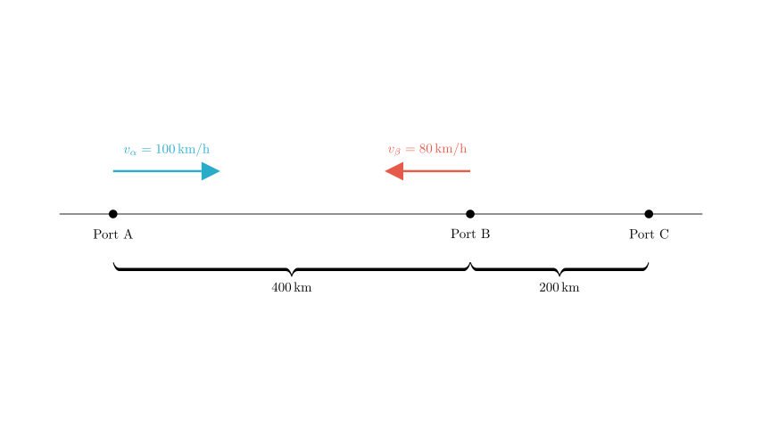
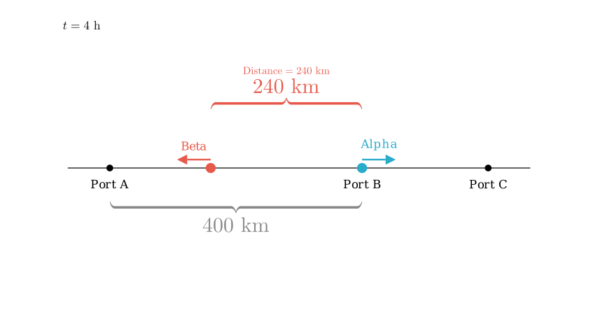

Problem Statement: There are three ports A, B, and C located sequentially along a straight coastline. - Boat Alpha departs from Port A and travels at a constant speed along the coastline towards Port C. - 1 hour later, Boat Beta departs from Port B and travels at a constant speed along the coastline towards Port A. - Both boats arrive at their respective destinations at the same time. - The speed of Boat Alpha is 1.25 times the speed of Boat Beta.
The graph shows the function relationship between the distance $y$ (km) of the two boats from Port B and the travel time $x$ (h) of Boat Alpha.
Determine the number of correct statements among the following: 1. The distance between ports A and B is 400 km. 2. The speed of Boat Alpha is 100 km/h. 3. The distance between ports B and C is 200 km. 4. At 4 hours after Boat Alpha departs, the distance between the two boats is 220 km.
Options: A. 4 B. 3 C. 2 D. 1
Solution Approach: We will analyze the provided distance-time graph to deduce the physical movements of both boats. By matching the graph segments to the specific journeys (A to C via B, and B to A), we can calculate the speeds, total time, and distances between ports to verify each statement.

Step 1: Analyzing Boat Alpha's Motion (Statement ① and ②)
Let's interpret the graph based on the problem description. The y-axis represents the distance from Port B.
Now we can calculate Boat Alpha's speed ($v_{\alpha}$): $$v_{\alpha} = \frac{\text{Distance } AB}{\text{Time}} = \frac{400 \text{ km}}{4 \text{ h}} = 100 \text{ km/h}$$

Step 2: Analyzing Boat Beta's Motion
Step 3: Calculating Total Time and Distance BC (Statement ③)
The problem states both boats arrive at their destinations simultaneously. * Destination for Beta: Port A (Distance 400 km from B). * Time taken for Beta to travel 400 km: $$t_{\beta} = \frac{400 \text{ km}}{80 \text{ km/h}} = 5 \text{ hours}$$ * Since Beta starts at $x=1$, the arrival time on the clock (x-axis) is: $$x_{\text{arrival}} = 1 + 5 = 6 \text{ hours}$$
So, the total travel time for the scenario is 6 hours.
Distance $BC = v_{\alpha} \times \text{time} = 100 \text{ km/h} \times 2 \text{ h} = 200 \text{ km}$.
Statement ③ is Correct: The distance between B and C is 200 km.

Step 4: Checking the Distance Between Boats at x = 4 (Statement ④)
We need to find the positions of both boats at $x=4$ hours.
Boat Alpha: At $x=4$, Alpha has traveled 400 km from A. Since $AB=400$ km, Alpha is exactly at Port B.
Boat Beta: Beta started at $x=1$. By $x=4$, Beta has been traveling for: $$\Delta t = 4 - 1 = 3 \text{ hours}$$
Distance of Beta from B $= 80 \text{ km/h} \times 3 \text{ h} = 240 \text{ km}$.
Distance between boats:
Distance $= 240 - 0 = 240$ km.
Statement ④ is Incorrect: The statement claims the distance is 220 km, but we calculated 240 km.
Conclusion: * Statement ①: Correct * Statement ②: Correct * Statement ③: Correct * Statement ④: Incorrect
There are 3 correct statements.
Final Answer: The correct choice is B (3个).